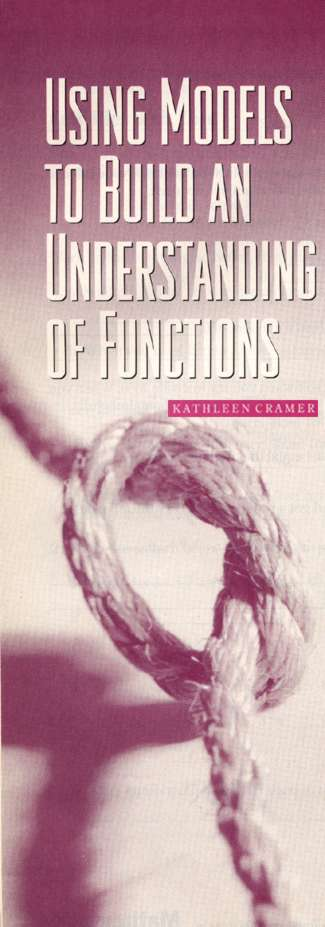
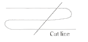
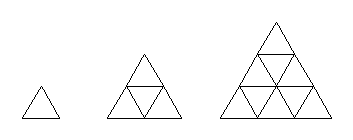

 |
|
From
the time that students enter kindergarten and throughout their early
elementary school years, they should have multiple experiences exploring
patterns. The study of patterns for middle school students should
shift to the study of functions (NCTM 1989). The question that this
article addresses is bow to plan and organize instruction for middle-grades
students to help them develop an understanding of function.
Middle
school students' experiences with function should be based on problems
that incorporate manipulative materials and involve students in
collecting data. The problems should lead students to build connections
between the concrete model and the numerical patterns or functional
relationships observed in the data. Students should work through
multiple problems that build on one another and enable students
to abstract significant mathematical ideas from the work.
The
teacher's role in this type of instruction is first to identify
good problems and organize them in a sequence that builds on previous
problems. Teachers need to lead students in discussion, asking questions
to help clarify the mathematics and draw connections among different
problems. The problems should be rewarding to do, but students must
move beyond the fun with the hands-on aspects of the activities
and see the mathematics. The role for the middle school teacher
is essential: to help make the mathematics explicit.
The
three problems presented here, taken together, foster an understanding
of the characteristics of linear, quadratic, and exponential functions.
These problems ask students to examine patterns in tables, find
function rules, look at graphs, and find similarities and differences
within and across the three types of functions. The problems presented
in this article were adapted from materials used in two teacher-enhancement
projects to help primary and middle school teachers develop a deeper
understanding of functions. The problems were adapted by teachers
for use with middle school students. Although this article addresses
activities for middle school students, functions can be made accessible
to students on a number of levels. Regardless of the grade level
of the students, the mathematics should be embedded in problems
that involve concrete models, and students should use informal language
to describe patterns and functional relationships before using symbolic
notation. Students should reflect on the similarities and differences
among these problems.
Mrs.
Lin's classes in a Minneapolis middle school recently worked on
the problems described in this article. The examples from students'
work are included.
Linear
Function Problem
The
problem in Figure 1 is an example of a manipulative-based
exercise that models a linear function. Figure 1 also shows
the format for all problems.
|
|
| |
| |
|
Number
Patterns from Cutting String
Fold
a piece of string in half. While it is folded, make 1 cut. How many
pieces of string do you have? Continue with another piece of string
folded in half, making 2, 3, 4, and 5 cuts. Complete the table below.
| #
of cuts |
0
|
1
|
2
|
3
|
4
|
5
|
| #
of pieces |
|
|
|
|
|
|
Questions
1.
Describe patterns that you observe in the table.
2. Without
cutting the string, use the pattern from the table to determine
the number of pieces for 6 cuts, 7 cuts, and then 8 cuts. Describe
how you use patterns in the table to do this. [Find more than one
way to extend the table.]
3. It
is possible to predict the number of pieces given the number of
cuts? Describe in words how to determine the number of pieces for
20 cuts.
4. What
if you had 21 pieces, how many cuts did you make? Describe how you
solved this problem.
5. Extension:
Fold the string like this: 
Predict
how many pieces you would have if you made 1 cut, 2 cuts, 3 cuts.
Verify your predictions by actually cutting string. Build a table
of data, and record the patterns that you see in the table. Find
the pattern that will predict the number of pieces, if you know
the number of cuts.
Adapted
from Sobel and Maletsky (1975)
|
Fig. 1 Problem
modeling a linear function
|
| |
|
Students
are presented with a task, and they collect data using manipulative
materials. Guiding questions ask students to describe multiple patterns
using informal language, then to consider the functional relationships
represented by the data. Figure 2 shows a sample of William's
work on this problem.
Most
of the middle school students in this class described similar patterns.
Notice that William describes patterns going across the table ("bottom
numbers are all odd and go up by 2"), as well as the function rule
("if you do the top x 2 + 1 it equals the bottom number"). Other
examples of students' language to describe patterns for this string
activity follow. Note that the quotations show exact student wording
and spelling.
•
"Theirs always 2 pieces more every time we cut a piece of
string."
• "Each
time you cut one more it goes up by two. Times the number of cuts
by 2 plus one. The number of cuts plus the next number of cuts
equals pieces for the original."
• "It
skips by 2's @ the bottom, and not @ the top."
• "The
number of pieces =the number of cuts x 2 + 1 more."
• "#of pieces = # of cuts + (# of cuts + 1)."
• "The difference between # of cuts and pieces keeps
going up by 1."
Fig.
2 Student work for the Cutting String Problem |
|
After
students complete the problem in cooperative groups, they should
have opportunities to share their work with the class. The problem
is open ended to allow all students to participate at some level.
One method of sharing is to record on a large chart the patterns
that students find. During this whole-group discussion, students
should see similarities and differences among the patterns that
each group describes. The teacher can ask students to use their
patterns to predict what the data set would look like if it continued
to follow the patterns. A number of ways to make this prediction
will come out of the discussion. The teacher can ask students to
explain the connection between the patterns they described and the
concrete model. The classes that worked on this problem made the
following connections during whole-group sharing times:
•
"The number of pieces is always odd because of the extra
piece at the end."
• "The
number of pieces increases by two each time - 1 cut makes 2 pieces
and you are cutting it one more time."
•
"The number of pieces is # of cuts x 2 + I since you fold it the
piece where it's folded is one piece. The string is folded when
you cut it so it's two times."
The
teacher should focus students' attention on two important patterns.
First, the teacher should highlight the pattern going across the
table, that is, as the number of cuts increases by one, the number
of pieces increases by two. When students examine other linear relationships,
they should see that an increase by some constant amount is a characteristic
of all linear functions. The other important pattern to highlight
is the symbolic function rule. This rule generalizes the number
of cuts to all possible cases. Teachers can build on the students'
language and help them translate their words into algebraic symbols.
Any of the students' descriptions of this function rule that are
noted above can easily be translated to P = 2C + 1, where P = number
of pieces and C - number of cuts.
Once
the symbolic function rule has been established, teachers can ask
students to identify which of the many patterns that they discovered
can be used to extend the table to 100 cuts. Students will conclude
that the function rule, P = 2C + 1, is the most efficient pattern.
Asking how many cuts would be needed to yield 309 pieces focuses
students' attention on the related function rule for the data set,
that is, C - (P - 1) /2. Students usually divide first, but when
they think about the problem concretely, they can see that to work
backward one must subtract the extra piece first, then divide by
2.
|
| |
|
|
|
|
Number
Patterns from Trains of Equilateral Triangles
Using
green pattern blocks, form the first three triangles shown below.
Notice that the triangles formed from the equilateral green triangles
are also equilateral.

Questions
1. Construct
the fourth triangle in the series. If the unit area is 1 green
triangle, what is the area of each of the four triangles built?
Record the resulting areas in the table below:
| Triangle
number |
1
|
2
|
3
|
4
|
5
|
| Area
in green triangle |
|
|
|
|
|
2.
Describe patterns that you observe in the table.
3.
Predict the area of triangle 5. Verify by building it.
4.
It is possible to predict the area of the triangle, given the
triangle number. Describe in words how you could determine the
area of the 20th triangle in the series.
5.
Translate the rule into an algebraic equation for the nth triangle
in the series.
6.
The area of an equilateral triangle is 441 green triangles. To
what triangle number would this area be matched? Explain how you
determined the answer.
Adapted
from Roper (1988)
|
Fig.
3 Problem modeling a quadratic function
|
| |
| |
|
Quadratic
Function Problem
The
problem in Figure 3 generates a Quadratic relationship, A=
T2, where A = area and T = triangle number. Figure
4 shows Anya's response to the problem. Other students gave
similar responses when asked to describe patterns going across the
table. Examples include the following:
•
"The numbers in between the area in the green triangles keep
adding 2."
• "the numbers go odd, even, odd."
• "Goes in odd numbers - l, 3, 5, 7, 9 [in terms of added
triangles]. The amount of increase is an odd number."
• "Growing faster than other tables."
• "Triangles grew: 1 1 + 3 1
+ 3 + 5."
• "Odd numbers and the next odd number 1 +3 + 5 + 7 + 9 etc."
Students
noted important patterns. They explained that the areas of the triangles
grew at a faster rate than the numbers of pieces did in the previous
string problem. Growth was connected with the concrete model; each
new layer for the next larger triangle was the next odd number.
For example, because triangle 2 has a bottom row of three green
triangles, triangle 3 will have a bottom row of five green triangles,
which is two more than triangle 2. Triangle 4 will have a bottom
row of seven, which is two more than five. This pattern continues
as each larger triangle is built. The area did not grow at a constant
rate, as the number of pieces did in the string problem, but students
noted that the area grew by consecutive odd numbers.
Fig.
4 Sample of student work on the Triangle Problem |
|
In
a whole-group discussion, the teacher can build on students' patterns
to clarify the differences between patterns in tables for linear
functions compared with those for quadratic functions. For linear
functions, the dependent variable grows by a constant amount. Quadratic
functions grow at a faster rate. In this example, the dependent
variable grew by the pattern 1, 3, 5, 7, 9; a constant difference
is observed in this growth. This second order constant difference
is a characteristic of quadratic functions.
Students
should also observe that the area values are square numbers. Students
described this function rule in a variety of ways:
•
"Area - number2"
• "The area is the triangle number square."
• "The top number multiply by itself to get area
in green triangles."
• "1x1=1; 2x 2=4; 3x3=9; 4x4=16; 5x5=25 the
top # times itself = the bottom #"
This
quadratic rule is easy for students to discover, and the connection
with recording the rule symbolically comes quickly. Students should
be asked to compare the rules from the string problem, noting that
the rule for the triangle problem involves an exponent.
At
this point, students should graph the functions from both problems.
Spreadsheets and graphing calculators can facilitate the graphing
component of the lessons. In their mathematics journals, students
can describe what the function rule for each problem looked like
when graphed on a coordinate graph. Students can then summarize
the differences among the graphs, patterns found in the tables,
and rules for each problem.
Exponential
Function Problem
The paper-folding problem in Figure 5 is an example of an
exponential function. As students solve this problem, they notice
that the patterns in this table differ from patterns examined in
each of the previous problems. They observe how quickly the number
of regions grows. Students may also recognize a doubling pattern
in the table and wonder why no constant differences can be found
as they look down the data in the column labeled "Number of regions."
|
|
| |
|
Paper-Folding
Patterns
Take a piece
of paper, and fold it in half as many times as you can. After
1 fold, there will be 2 regions.
How
many regions will occur after 3 folds? Four folds? How many folds
are possible? Complete the table
below. Imagine that there is no limit to the number of folds possible.
|
#
of folds
|
#
of regions
|
|
0
|
|
|
1
|
|
|
2
|
|
|
3
|
|
|
4
|
|
|
5
|
|
Questions
1. Describe
patterns found in the table.
2. Describe
how the number of regions is related to the number of folds. Translate
this relationship into an algebraic rule. Use this rule to determine
the number of regions given 18 folds.
3. Add another
heading to the table: Area of the smallest region. Complete the
table under this heading.
4. Describe
patterns observed in the table. How is the area related to the
number of folds? Describe the relationship algebraically.
5. Graph both
relationships. How are they alike? Different?
Adapted
from Phillips (1991)
|
Fig.
5 Problem modeling an exponential function
|
| |
|
Students
will likely comment that the number of folds is multiplied by 2
each time. Students from Mrs. Lin's class described this pattern
in a variety of ways:
•
"# of regions doubles every time."
• "Each region double it up by 2 each time."
• "Except for 0, # of folds x 2 = # of regions."
• "It doubles every time the number is folded in half therefore
the regions double."
Some students related this idea to actual paper folding, as shown
in the last two students' comments. To translate their understanding
of this doubling pattern into a symbolic function, the teacher may
need to connect the idea to the paper folding, as follows:
If
I start with no folds, then I have one region and, with one fold,
I have two regions (1 x 2). If I fold again, each previous region
is doubled; this idea is the same as (I x 2) x 2. If I fold again,
each previous region will be doubled; this idea is the same as
(1 x 2 x 2) x 2. What happens if I fold a fourth time? A fifth
time? What numerical relationship seems to hold true between the
number of folds and the number of total regions? Describe this
relationship in your journal.
The
students in these classes were able to describe the function in
words: "# of 2 multiplied is same as the number of folds," "2 to
the exponent of the # of folds = # of regions," "2 (power of
# of folds)." The students found that translating their words
into symbols, y = 2x, was difficult, however, and had
to be led to this new type of symbolic notation by the teacher.
This kind of instruction was usually not needed for the function
rules in the previous examples.
|
|
Again,
students should graph the function; record in their journals the
characteristics of the patterns, symbolic function, and graph for
the exponential function; and describe differences among all three
examples. Students will need help to understand how to evaluate
20 and to graph values for x <
0. A graphing calculator would work well for this purpose.
Once
students have had experiences with the three types of functions,
they should look at other examples. Figure 6 shows four other
problems. Patterns with Squares: Area and Perimeter provides examples
of linear and quadratic functions. Developing Pick's Theorem is
an example of a linear function, the Tower Puzzle is an example
of an exponential function, and the Peg Game is an example of a
quadratic function.
|
|
| |
|
Fig.
6 Other sample problems that develop function concepts with concrete
models
|
|
| |
|
Students'
investigation of each problem should be followed by leading questions
that ask students to describe multiple patterns and function rules
in their own words and to translate the function rules into algebraic
notation. Teachers should guide students to see connections among
concrete models, the symbolic function rules, and other patterns
observed in the data tables.
|
|
To
help students bring all their new knowledge together, they can complete
the summary data form shown in figure 7. The summary data
form includes eight sections, one for each of the problems presented
in this article. In the appropriate section, students consolidate
each problem's data table, rule, and graph. Then students can cut
out the eight sections, sort them into three piles according to
their similarities, and write about the similarities in each set
and the differences among the sets. The observations about similarities
and differences should be based on an examination of graphs, rules,
and patterns.
|
|
| |
|
|
| |
|
Summary
Middle-grades
students can learn about functions by exploring multiple concrete
examples that ask students to talk and write about ideas informally.
Symbolic notation is more meaningful when it is connected with physical
representations and informal language. By exploring multiple examples
and by making comparisons within and between problem types, students
can develop a deep understanding of function.
The
examples presented here are not new. In the 1960s, Robert Davis
developed activities for elementary school children to explore function
with his Madison Project materials (1966). The Tower Puzzle, Developing
Pick's theorem, and the Peg Game were adapted from those materials.
The string activity was adapted from a wonderful resource, Teaching
Mathematics: A Sourcebook of Aids, Activities and Strategies, by
Max Sobel and Evan Maletsky (1975). The equilateral triangle and
area and perimeter problems were adapted from Moving On with Pattern
Blocks (Roper 1988). The paper-folding example was adapted from
one of the NCTM's Addenda series booklets (Phillips 1991). Good
problems such as these are available for teachers to use and, surprisingly,
have been around for the last thirty years.
The
work reported in this article was supported in part
by the National Science Foundation under grant
number ESI-9254455. All opinions expressed
are solely those of tire author.
|
|
References
Davis,
Robert, developer. Madison Project Independent Exploration Materials.
Danbury Conn.: Math Media, 1966.
National
Council of Teachers of Mathematics (NCTM). Curriculum and Evaluation
Standards for School Mathematics. Reston, Va.: NCTM, 1989.
Phillips,
Elizabeth. Patterns and Functions. Curriculum and Evaluation Standards
for School Mathematics Addenda Series, Grades 5-8. Reston, Va.:
National Council of Teachers of Mathematics, 1991.
Roper,
Ann. Moving On with Pattern Blocks: Intermediate Problem-Solving
Activities. Sunnyvale, Calif.: Creative Publications, 1988.
Sobel,
Max A., and Evan M. Maletsky, Teaching Mathematics: A Sourcebook
of Aids, Activities, and Strategies. Englewood Cliffs, N.J.: Prentice-Hall,
1975.
KATHLEEN
CRAMER, kathleen.a.cramer@uwrf.edu, teaches mathematics education
courses at the University of Wisconsin-River Falls, River Falls,
WI 54022. She is especially interested in developing mathematics
content courses for elementary school teachers.
|
|
| |